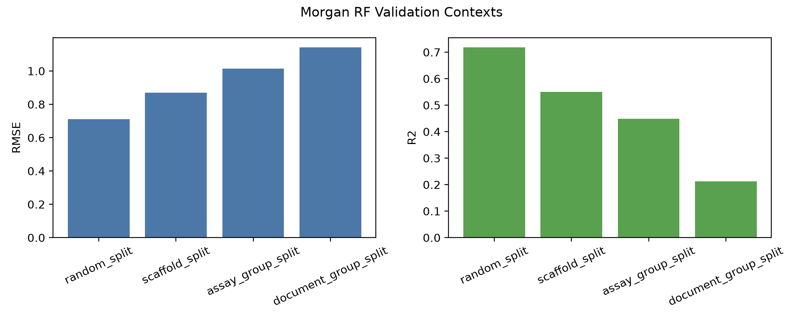

Cheminformatics and CADD
Public ChEMBL workflows, molecular descriptors, scaffold validation, applicability-domain checks, and structure-aware sanity checks.
Computational chemistry · cheminformatics · molecular ML
Computational chemist working on CADD/QSAR, antibody sequence ML, reaction-yield modeling, and molecular simulation.
Eva builds public-data workflows, validation reports, notebooks, figures, and reproducible code for molecular modeling and machine-learning problems in drug discovery and materials chemistry.
Public ChEMBL workflows, molecular descriptors, scaffold validation, applicability-domain checks, and structure-aware sanity checks.
Antibody sequence records, k-mer baselines, pretrained representation checks, source-holdout validation, and existing-record prioritization.
Public HTE reaction-yield records, grouped component splits, uncertainty diagnostics, and active-learning simulations.
GROMACS polymer-interface analysis, ORCA and CREST molecular modeling, periodic DFT utilities, and SLURM workflows.


Biologics
Public antibody sequence-record workflow with supervised k-mer baselines, IgBert and AbLang2 checks, source-holdout validation, OAS background retrieval, and existing-record ranking.
5,573 strict labeled records · grouped ROC-AUC 0.780 · OAS top-25 shortlist

Reaction informatics
Public Buchwald-Hartwig HTE benchmark with reaction cleaning, categorical component features, out-of-component validation, uncertainty diagnostics, and active-learning simulation.
3,955 public HTE records · additive-held-out R² 0.726 · Spearman 0.860
Added OAS existing-record ranking summaries and an unsupervised cached-embedding sequence landscape.
Consolidated the scaffold-validation, applicability-domain, triage, and redocking workflow into a public project page.
Packaged a public HTE benchmark with additive-held-out validation, uncertainty diagnostics, and active-learning simulation.
GROMACS analysis of polypropylene/brucite interfaces, coated and uncoated filler configurations, contact counts, and interaction energies.
ORCA and CREST workflows for conformer handling, bond-length analysis, nonbonded contacts, and candidate interpretation.
Quantum ESPRESSO inputs, CIF conversion utilities, relaxation outputs, phonon setup, and restart scripts.
SLURM-oriented scripts for setup, restarts, benchmarking, and simulation-analysis workflows.
RDKit · ChEMBL · Morgan fingerprints · descriptors · scaffold split · applicability domain
CoV-AbDab · OAS · CDR regions · k-mer features · IgBert · AbLang2 · source holdout
Public HTE data · component labels · out-of-component validation · active-learning simulation
GROMACS · ORCA · CREST · Quantum ESPRESSO · SLURM
scikit-learn · PyTorch · grouped validation · ROC-AUC · PR-AUC · RMSE · R² · uncertainty diagnostics
For CV, project details, and public code, use the links below.